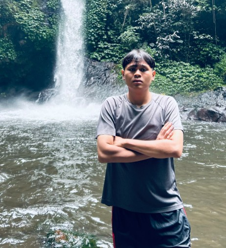
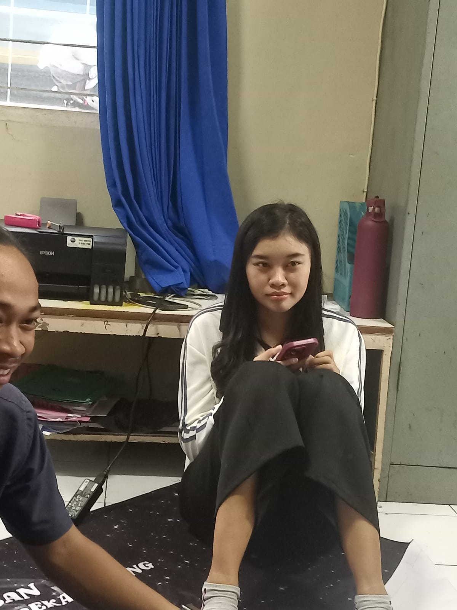
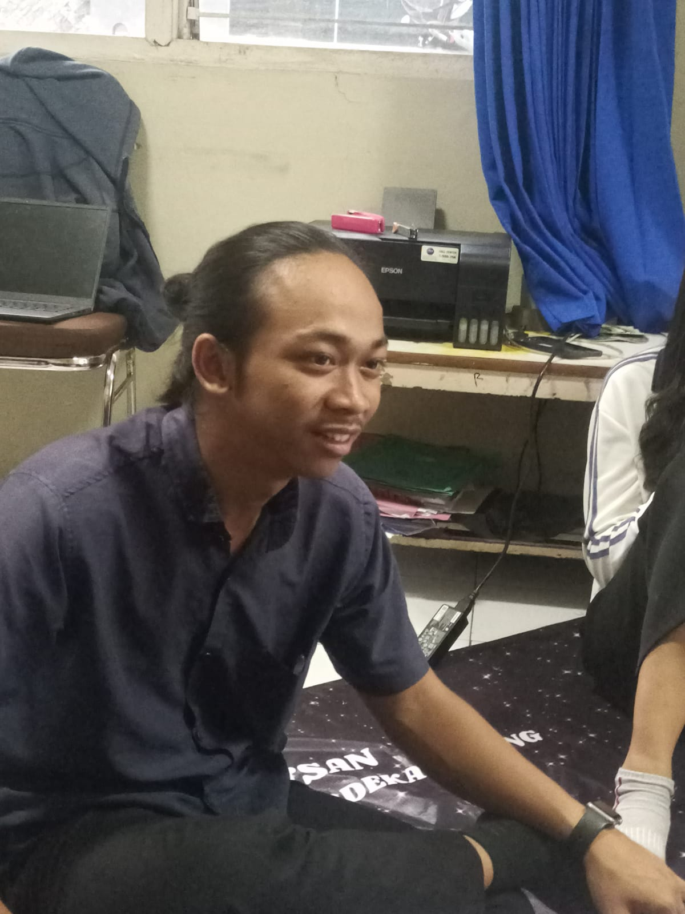

Badan Pengurus Harian

Ketua Umum
Jonathan Ferdin Karan
DPM-FH UNMER Malang
NIM: 24010000013

Sekretaris Jendral
Fawwazy Hassan Vendra
DPM-FH UNMER Malang
NIM: 24010000019

Wakil Sekretaris Jendral
Azril Ardiansyah
DPM-FH UNMER Malang
NIM: 25010000036

Bendahara Umum
Tsalis Maulidiyah Nur Aini
DPM-FH UNMER Malang
NIM: 24010000020
Struktur Komisi
Komisi A
Pengkajian Kebijakan dan Strategi Gerakan
Indra Haryanto Nurlette
CO
NIM: 25010000152

Kayla Azzahra
NIM: 25010000025
Komisi B
Pendidikan, Penelitian, Advokasi dan Kesejahteraan Mahasiswa
Arya Hilmi Rosyad
CO
NIM: 25010000122

Yolan Cristiani Nahak
NIM: 25010000211

Nur Azizah Salsabila
NIM: 25010000131
Komisi C
Hubungan Mahasiswa dan Masyarakat
Dinul Qoyyimah Wahdaniyah
CO
NIM: 24010000015

Kheisya Dentanaya Rizki Meilyta
NIM: 25010000192

Nadinfah Belvana H.N
NIM: 25010000039
Komisi D
Pengembangan Organisasi
Herlina Anjelina
CO
NIM: 25010000064

Peon Kulla
NIM: 25010000144

Gerilya Rafid Pratama
NIM: 26010000181
Komisi E
Pengawasan Anggaran
Shakira Sendy Aulia Lawalata
CO
NIM: 24010000006

Eltria Natsya Ghello
NIM: 24010000153

Chintia Hidayat Yapardi
NIM: 24010000148